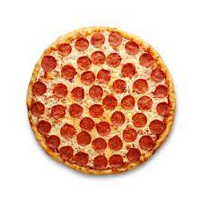

Pizza

Description
Quick and easy for those summer cookouts. I often make as an appetizer
while the ribs are cooking. Use whatever toppings you normally like on
regular pizza, but the barbeque chicken is always a crowd pleaser! The
dough never makes a perfect rectangle, but we have fun guessing what it
looks like ('That looks like America!'). For the chicken, I use the
grilled chicken pre-cooked at the store.
Ingredients
- 1 cup chopped cooked chicken
- ½ cup barbeque sauce, divided
- 1 (13.8 ounce) package refrigerated pizza dough
- 2 tablespoons olive oil, or as needed
- 1 cup shredded Colby-Monterey Jack cheese
- 1 cup diced tomatoes, or to taste
Steps
- Preheat grill for medium heat and lightly oil the grate.
-
Mix chicken and 2 tablespoons barbeque sauce together in a bowl until
evenly coated.
-
Roll dough onto a work surface and cut in half to form 2 rectangles.
Brush the top of each rectangle with olive oil.
-
Place dough, oil-side down, onto the grill; cook until bottom of dough
is browned and top is bubbling up, about 5 minutes. Brush the tops of
each dough with oil and flip.
-
Spread the remaining barbeque sauce over each crust; top with chicken,
Colby-Monterey Jack cheese, and tomatoes.
-
Close the lid of the grill and cook pizza until cheese is melted, 2 to 3
minutes. Remove pizza from grill and cool before slicing, 2 to 3
minutes.